Read this first
This manual covers Air Operations version 0.2. You are the air operations controller. The troops on the ground are not yours: they fight their own battle, report what they see and ask you for help. Yours are a handful of slow aircraft with little fuel and fewer bombs.
Everything on your map is what air operations believes. It is late, often wrong and sometimes contradictory. The truth is shown only in the debrief.
Contents
History
Eyes over the jungle...
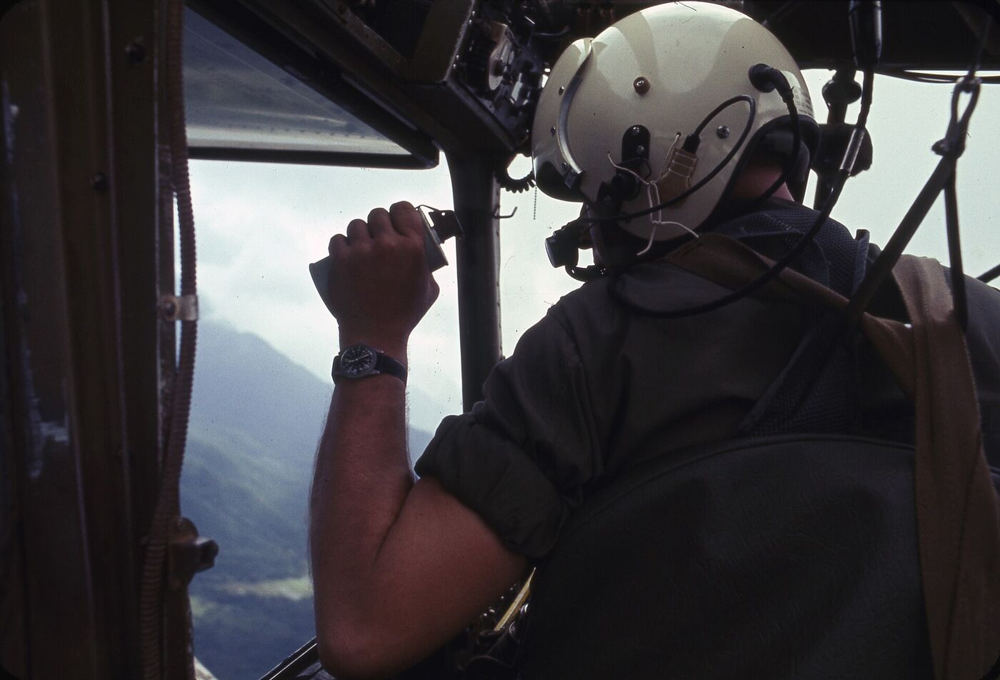
In the war in Southeast Asia the enemy rarely stood still to be bombed. It moved by night, under triple-canopy jungle, and fought close to the troops who found it, often close enough that a bomb meant for it could fall on them.
Fast jets crossing a valley at hundreds of kilometres an hour could not tell one green hillside from another. Someone had to find the enemy first, tell friend from foe, and bring the strike in on the right spot. That job fell to the forward air controllers: pilots in light, unarmed aircraft such as the Cessna O-1 Bird Dog, flying low and slow for hours over the same patch of ground until they knew every trail on it.
A FAC marked targets with smoke rockets, talked to the troops on one radio and to the fighters on another, and decided, minute by minute, where the little air power there was would do the most good.
Behind them stood the air operations centres: the people who knew what every aircraft was doing, how much fuel it had left, and which of a dozen calls for help could still be answered.
3The controller
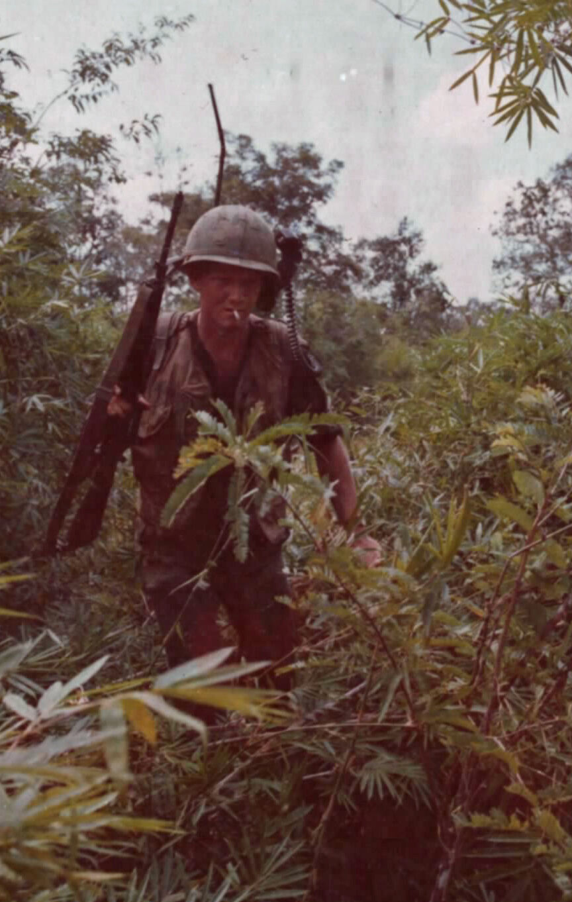
This game puts you in that seat. You do not move troops. Platoons on the ground choose their own routes, fight their own drills and decide for themselves when to call for air.
What reaches you is radio traffic: a spot report from a pilot who saw "squad-sized hostile infantry" for a few seconds, a platoon leader in contact shouting a grid, a unit that has not reported for twenty minutes. Each report is late. Many are wrong. Two reports may describe one enemy group, or two.
From that you build a picture, decide with what you know, and live with the result.
The design follows real doctrine where it can: NATO map symbols (APP-6), SALUTE spot reports, 9-line support requests, brevity words such as JOKER, BINGO and WINCHESTER, track numbers, source ratings, danger close and military time.
The places, units and events in this game are fiction, freely inspired by the air war in Southeast Asia. The aircraft and the photographs in this manual are real.
4Setup
Air Operations runs in a web browser. To run it from the source you need Node.js 22 or newer.
Air Operations requires the following:
- A current Chrome, Firefox, Edge or Safari
- A keyboard and mouse (right-click is used a lot)
- A screen of 1280 × 800 or more
- A cup of coffee for the long nights
Bookmarks
The address records what you are playing, so a battle can be bookmarked or shared:
The same seed and the same orders always replay the same battle. Export log saves your orders so that a battle can be replayed and checked.
5The scenario menu
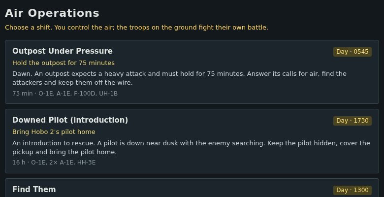
When you open the game the scenario menu is shown. Each card gives a scenario's objective, briefing, time of day, length and the aircraft you will have. Click a card to play it.
A battle is decided by its seed. Leave it empty for a new battle each time, or enter a number to play one battle again with a different plan. The menu remembers the last scenario you played.
Inside a battle, the Scenarios button in the header brings you back to the menu.
Speed
A battle runs in real time at 1×. Use 2×, 4× and 8× when nothing is happening, and Space to pause. You can give every order while paused.
6The game: basic concepts
The picture
The map does not show the enemy. It shows reports of the enemy: where someone saw something, when, and how sure they were. A contact drawn with a solid frame was reported moments ago. A dashed one is old, and it is only where the enemy was. Where it went is your estimate.
Air operations groups reports that seem to be one enemy group into tracks, each with a number. It can be wrong: two groups may be merged, or one counted twice.
The troops
Ground units fight on their own. They know only what they have seen and what they have been told. A platoon that has been warned of an ambush can go around it; one that has not will walk into it. Telling them is your job.
The aircraft
You do not fly. You give a crew a task, such as watching an area or covering a platoon, and the crew flies it: it chooses an altitude, searches, attacks within the weapons control you set, and breaks away from ground fire within the risk limit you allow.
The clock
Fuel, bombs and daylight run out. An aircraft that goes home to rearm is gone for a long time. Plan reliefs before you need them.
7The missions
There are six scenarios, each with its own objective, terrain, weather and enemy. Every one is played from the same seat, but each asks something different of you.
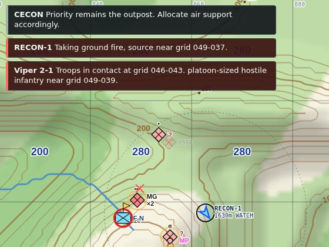
Outpost Under PressureDawn, 75 min. Hold an outpost against a heavy attack. Play this first.
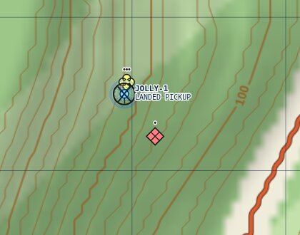
Downed PilotDusk, up to 16 h. An introduction to rescue, guided by headquarters messages.
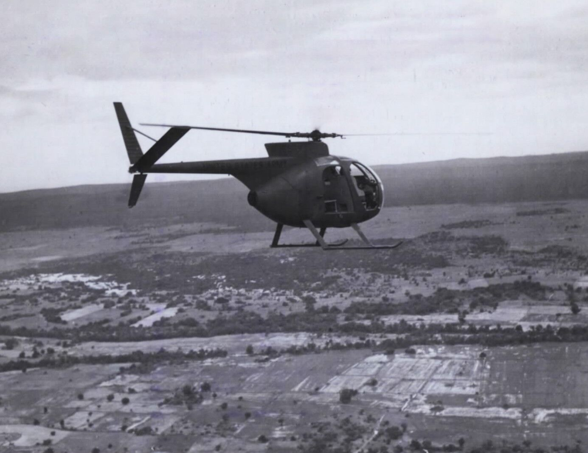
Find ThemDay, 60 min. Two spotter aircraft and an hour to find a hidden force.
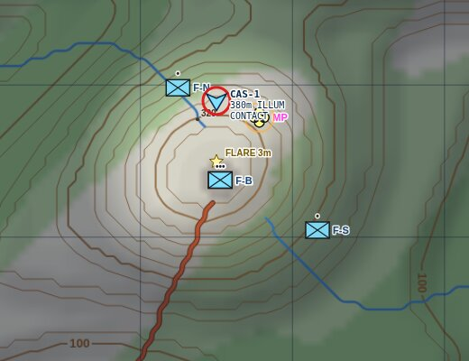
Outpost at Night0400, 75 min. The same outpost in the dark. Flares light both sides.
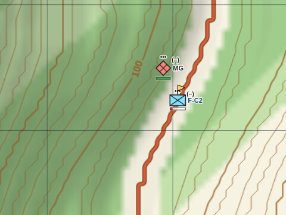
Valley RoadDay, 2 h. Scout ahead of a column driving up a valley and support it.
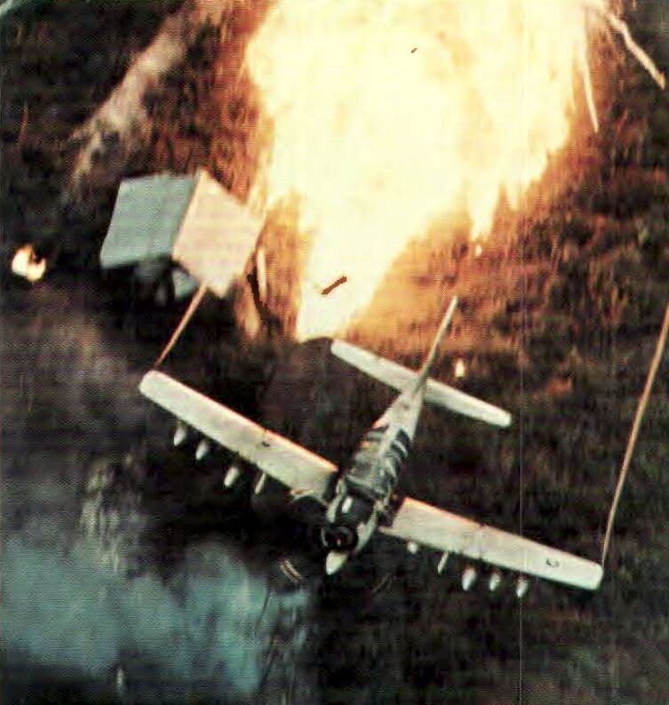
OverwatchDay, 2 h. The same road, the enemy dug in, and only two bombs.
Winning and losing
Every scenario has one objective, shown in the header: hold an area for a set time, get a column to a place, locate a force, or bring a pilot home. When it is decided the battle ends and the result is shown, such as OUTPOST LOST: mission failed or PILOT RECOVERED: mission success.
The ground decides most battles. You win by putting the right aircraft over the right place at the right time, and by telling the troops what they need to know before they need it.
Taking care of your crews
An aircraft hit by ground fire goes home, and its mission ends there. Repairs take far longer than rearming. Losing an aircraft early in a battle usually costs more than the target was worth.
The mission report
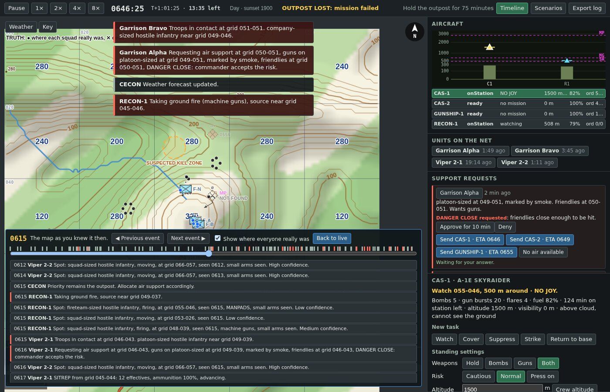
At the end of a run the mission report sets your estimates beside the truth: how many enemy there were, where they were, and how many fell. Each source is rated from A to E by how often it was right.
The report opens automatically. Expand an aircraft to see its sorties, time on station, damage and contribution to reconnaissance, strikes, evacuation or illumination. Close it to review the map and timeline; reopen it from Mission report in the header, or download it. There is no live Summary tab: the radio and map remain your working picture.
9The screen
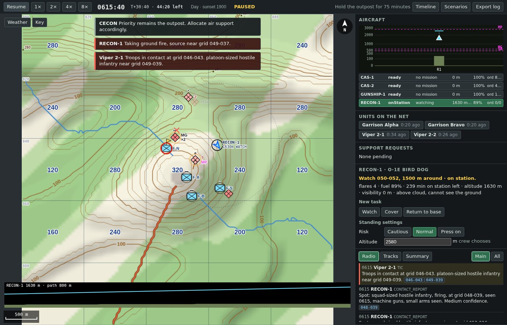
The map
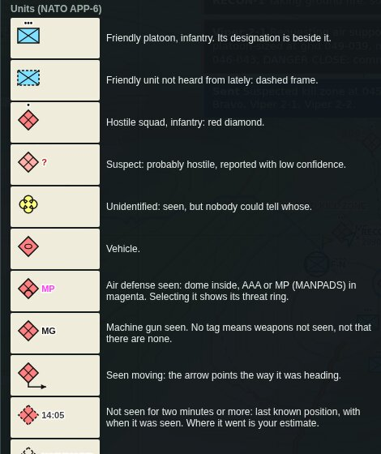
Units are drawn with NATO (APP-6) symbols. Friendly units are blue rectangles. Hostile ones are red diamonds. An X inside means infantry.
The marks above a symbol give its size: ø a team, ● a squad, ●●● a platoon.
A solid frame is a fresh report. A dashed frame is a stale one: the last known position, with the time it was seen. The small arrow points the way it was moving.
A ? beside a diamond means the report was low-confidence. A yellow clover is a contact nobody could identify. Weapons seen are written beside the symbol: MG for machine guns, MP for shoulder-fired missiles (MANPADS) in magenta.
A contact marked NOT FOUND was searched for and not seen. It may still be hidden there.
The bar under a symbol is its condition: how much of it is left, as the reports estimate it.
11Giving orders
Select an aircraft (click it, or press 1–9), then right-click the map. The menu offers what makes sense on that spot. You can also press a task key and click the map.
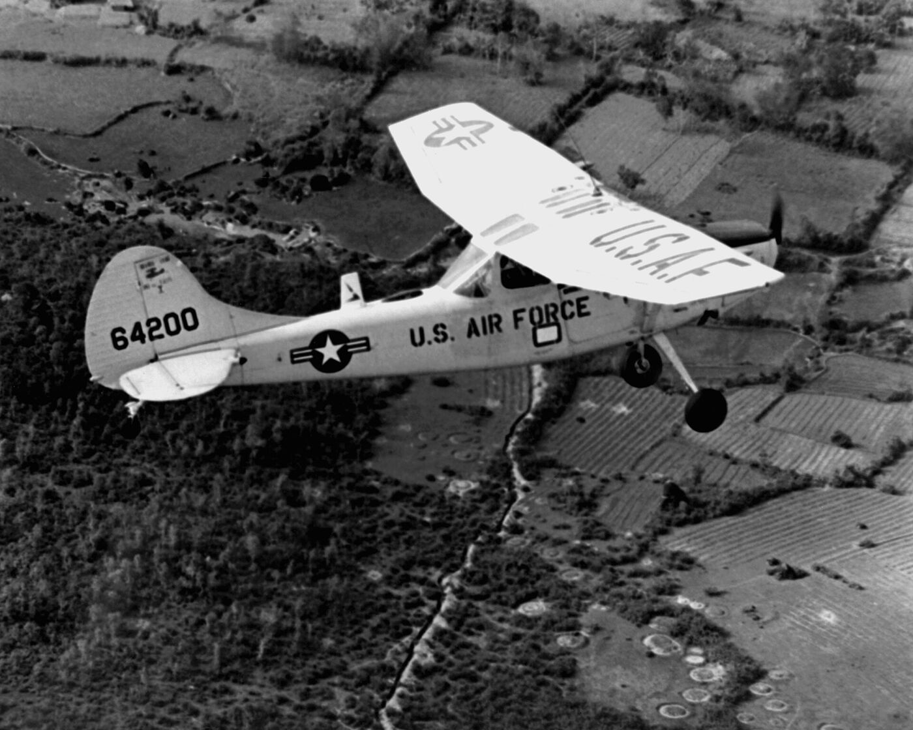
Watch
Sends the aircraft over an area. A recon aircraft searches it. A strike aircraft attacks what it finds there, as weapons control allows.
Hot key: W
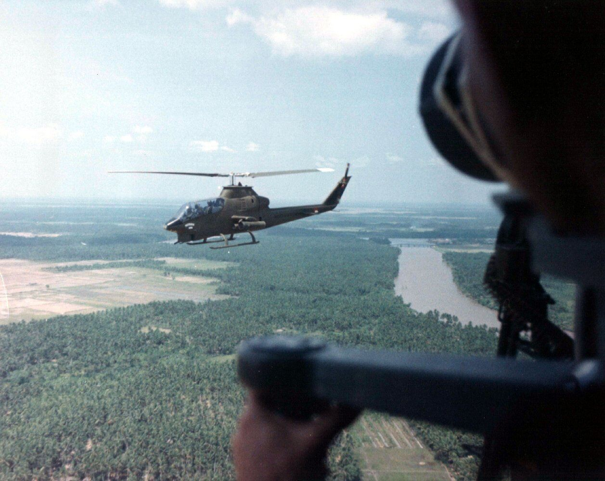
Cover
Keeps the aircraft over a friendly platoon, watching ahead of it as it moves.
Hot key: C, then click the platoon
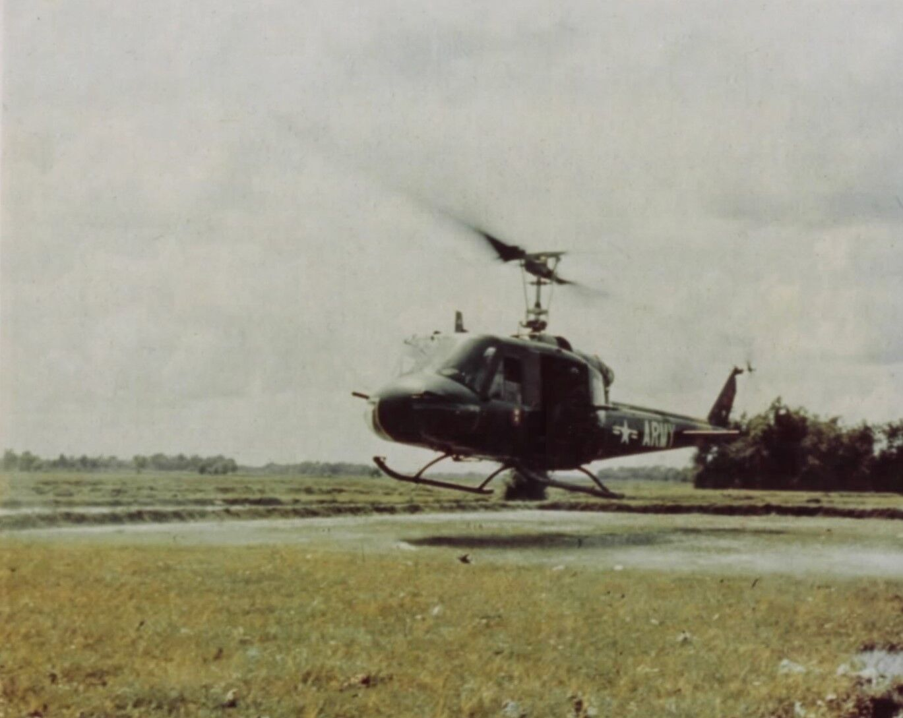
Suppress
The aircraft strafes an area with guns until the time you set. It kills few, but it keeps heads down while the troops move.
Hot key: S
Strike
One bombing pass on a point, then the aircraft watches it. Bombs are few. Spend them where they decide something.
Hot key: K
More orders
Illuminate
At night, keeps flares burning over an area. Only aircraft that carry flares offer it. Flares light friends as well as enemies.
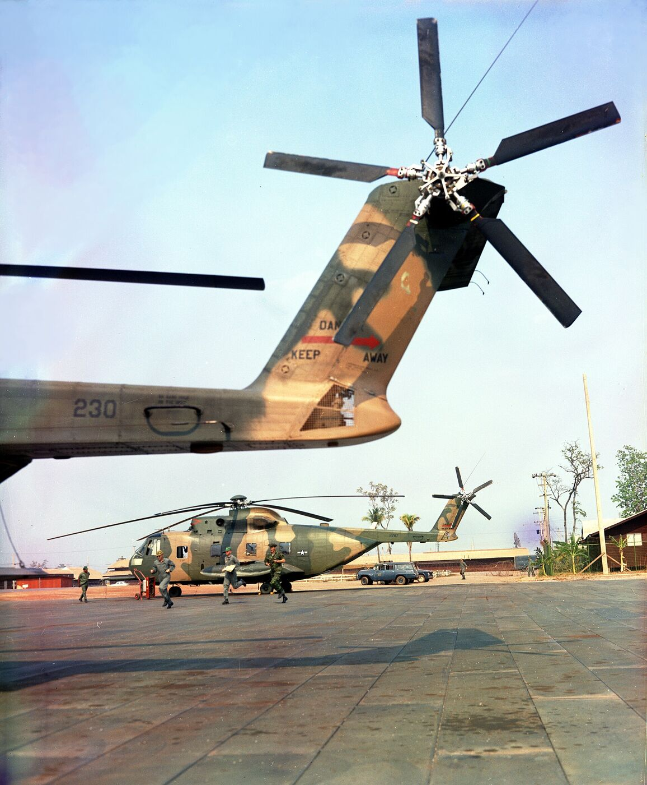
Pick up here
A rescue helicopter lands at the point and waits while survivors board. See Search and rescue.
Mark this place
Warns the units you choose of a suspected kill zone. They watch that ground and go around it.
Standing settings
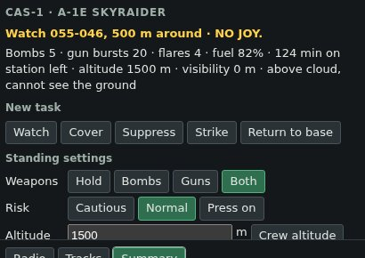
Weapons: Bombs, Guns, Both, or Hold, when the crew picks no targets of its own.
Risk: Cautious breaks away at the first shot. Normal breaks when hit or under missile and flak fire. Press on stays.
Altitude: type it, drag it on the profile, or leave it to the crew. Low is accurate and easy to hit.
Return to base (R) sends it home.
13Support requests
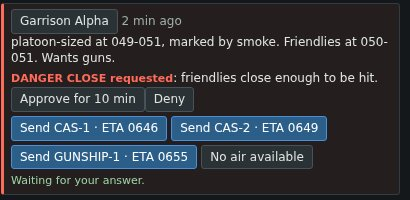
When a platoon decides it needs air, it sends a request. It arrives as a card under Support requests, with the target, its size, whether the unit will mark it with smoke, and where the friendlies are: the essentials of a 9-line.
Answer it. Click Send on an aircraft (each one shows its time of arrival), or No air available. A unit that is told no fights on without air. A unit that hears nothing waits, and waiting can cost it.
Units do not ask lightly. They wait for air only when the enemy position is strong, there is time, and they can wait unseen.
Danger close
When friendly troops are within about 200 m of a target, the crew holds fire and calls DANGER CLOSE. Only you can clear it, for ten minutes at a time, and you can revoke it. At night the distance grows.
If bombs or bullets hit friends, the ground calls CHECK FIRE. Stop.
14Reading reports
The spot report
Contacts are reported in SALUTE order: Size, Activity, Location, Unit, Time, Equipment. "Spot: squad-sized hostile infantry, firing, at grid 048-039, seen 0615, machine guns seen. Medium confidence."
Source ratings
Each contact carries an Admiralty rating such as B2. The letter is the source: B an aircraft, C a ground unit. The figure is the information: 1 confirmed by another source, 2 to 4 by the confidence of the report.
Tracks
Reports that seem to be one group become a track with a number such as TN 4001. Each part of a track comes from its best source: position from the freshest, size from the best observer. Select a track to see the reports behind it, or split them apart if you think they are wrong.
Claims
Units in a fight count high. Casualty claims are deconflicted on the track's condition bar, and the debrief shows the truth.
15Forwarding
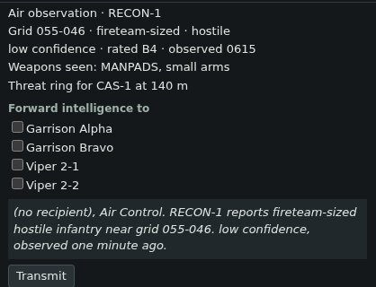
Units act on what they know. Your aircraft see far more than any platoon. Select a contact or track, tick the units that should know about it, and Transmit. The message keeps its real source and age, so they know how much to trust it.
Warned of an ambush, a column can go around it. Told where the enemy is digging in, a platoon can wait for air before it walks in.
The radio
Traffic is sorted by how much it matters. Urgent calls, such as troops in contact or an aircraft taking fire, pop over the map. Main shows what needs you. All also shows routine position reports.
Units on the net
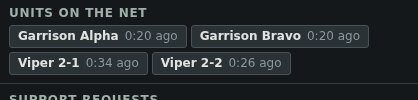
Every unit you can reach, with the time since it was last heard. Click one to ask for its Position, a SITREP or a Contact update.
16Fuel, bombs and fire
Every aircraft has a fixed time on station and a fixed load. The crew tells you when they run out:
Rearming and refuelling take ten minutes on the ground, plus the flight both ways. Repairs take longer. Keep someone in the air.
Ground fire
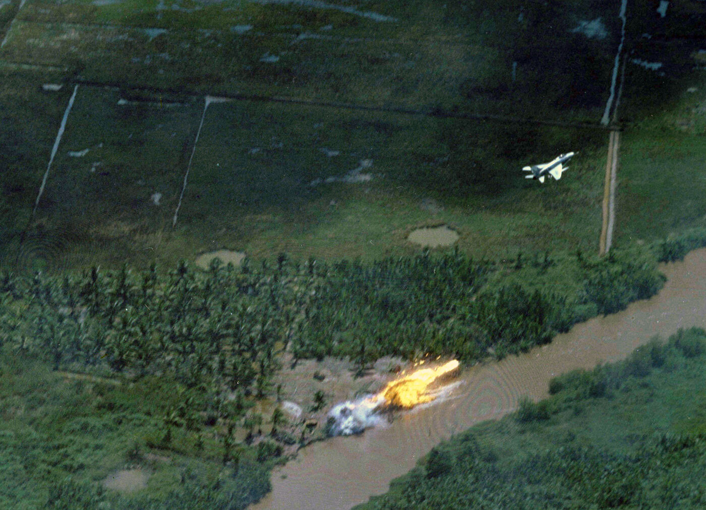
Low and slow is easy to hit. Small arms reach a few hundred metres up. Anti-aircraft guns and shoulder-fired missiles reach much higher, and an air defense team keeps quiet until something flies over it.
A hit that gets through ends the aircraft's mission. The source of the fire is reported and marked on the map: avoid that ground, or deal with it.
Terrain blocks everything: sight, fire and bombs. A hill between your aircraft and the enemy protects both.
17Night, light and flares
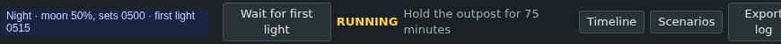
Light comes from the sun, the moon and the cloud above them. The header tells you what you have, and when it changes.
In the dark everyone sees less and shoots worse, except at units that are firing: muzzle flashes give them away. Strike crews attack only targets that are lit or firing, and danger close reaches further.
Flares are dropped by aircraft that carry them, ordered from the right-click menu with Illuminate. Ground units fire illumination rounds of their own. A flare lights everyone under it, friend and enemy alike.
Wait for first light
When the night is quiet, Wait for first light in the header fast-forwards to dawn. It stops at once for anything urgent: a call for help, fire, a helicopter landing.
18Weather
Storms, cloud and rain come and go through a battle. Forecasts are issued, and they are not always right. Press Weather on the map to draw the forecaster's chart, and slide it forward to see what is coming.
All of it comes down to one figure, visibility, which decides how far crews see and how well everyone shoots. An aircraft above the cloud cannot see the ground at all.
The timeline
Press T to open the timeline. The battle pauses, and you can drag back to any earlier moment to see the picture as you knew it then: where that platoon was when it last reported, or what the first sighting looked like before the track was built.
After the run the timeline gains one more view: the truth. It shows where everyone really was, minute by minute, beside what you believed.
After the mission
The Mission report opens when the battle ends. It explains the outcome, accounts for casualties and evacuation, and shows each aircraft’s contribution. Close it to examine the timeline, then reopen it from the header.
19Search and rescue
That others may live
"That others may live" is the motto of the Air Force pararescuemen. In Southeast Asia a downed aircrew could count on a rescue force: Sandy Skyraiders to find the survivor and hold the enemy off, and Jolly Green helicopters to go in and bring the survivor out.
A downed pilot in this game hides and evades alone, with water for about fourteen hours. When it runs out the pilot slows down, and two hours later dies of thirst.
The pilot carries a survival radio and keeps it silent unless you call. Every call drains the battery, twelve calls in all, and gives the enemy a direction-finding fix on where it came from.
So ask little, and ask well. Find the pilot through Units on the net: ask for a Position, or a SITREP that also reports water and battery.
The hunters start from where they saw the parachute come down and close on every lead. They can take the pilot only once they have actually seen the pilot.
20The pickup
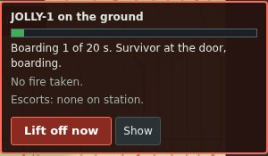
- Find the survivor, and the enemy nearby, with recon.
- Put strike aircraft over the area to Cover the pickup and suppress whoever comes close.
- Right-click on the survivor's position and choose Pick up here for the helicopter. Only a helicopter with seats offers it.
- The helicopter edges onto the point and lands: WHEELS DOWN. The game drops to 1× and the pickup panel opens.
- The survivor runs for it, if within reach. Boarding takes twenty seconds beside the door.
- SURVIVOR ABOARD: it lifts off and flies home. The rescue succeeds when it lands there.
On the ground
A helicopter on the ground is eight times easier to hit. Under fire the crew lifts off by its risk limit: Cautious at the first shot, Normal when hit or under missile fire, Press on never. Lift off now, or any other order, takes it up at once. Boarding starts again next time.
Night hides the pilot and the hunters alike. Waiting for first light may be the safest thing you do.
21Forward air controller: Cessna O-1E Bird Dog
A two-seat, high-wing light aircraft built for the Army as the L-19 and flown in Vietnam by the Air Force's forward air controllers. Slow, unarmed but for smoke rockets, and able to stay up for hours, it was the eyes of the air war in the South.
In the game: your best spotter in a fixed-wing aircraft and the longest on station. It searches, reports and lights the night. It has no armor: one hit ends its day.
22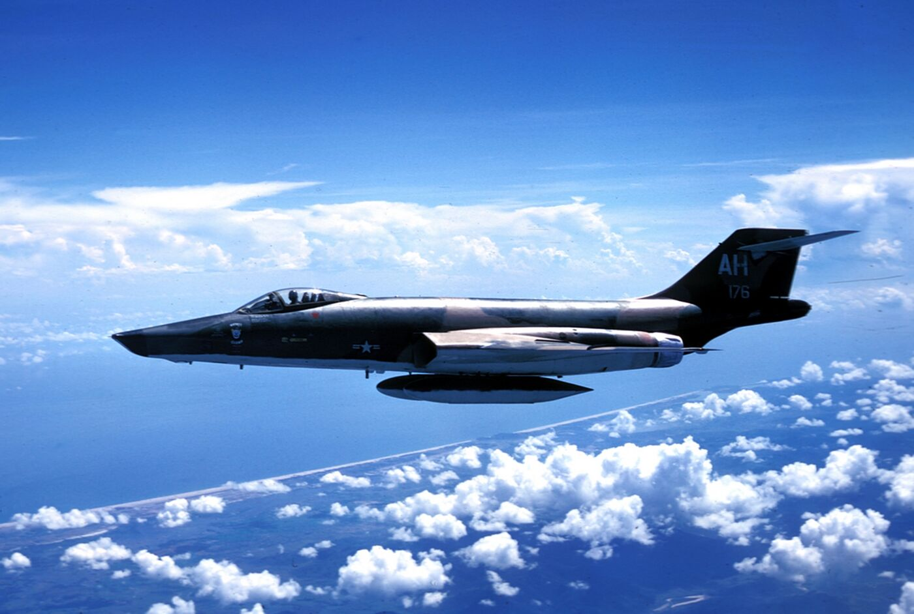
Photo reconnaissance: McDonnell RF-101C Voodoo
The unarmed camera version of the Voodoo fighter. RF-101Cs flew reconnaissance over Laos and North Vietnam from early in the war, relying on speed alone to get the photographs home.
In the game: sweeps a wide area fast and sees far, though not much detail. Hard to hit, and tough to stay with: it covers a whole sector in minutes, then has to go home.
23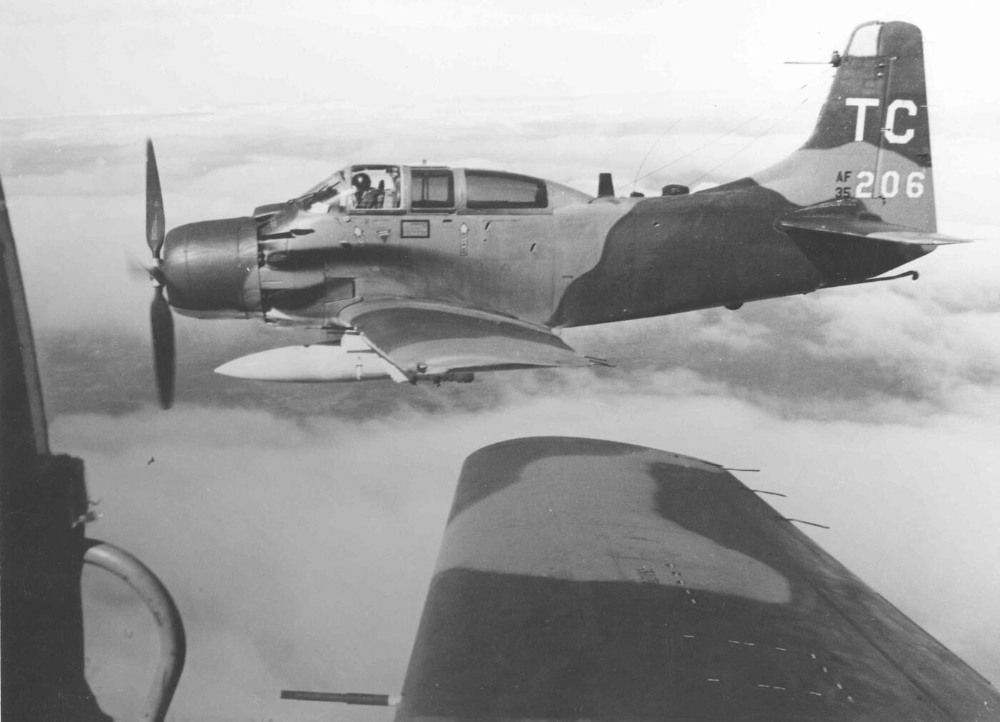
Close air support: Douglas A-1E Skyraider A.K.A. "Spad", "Sandy"
A piston-engined attack aircraft designed in 1945, still flying in Vietnam twenty years later because nothing jet-powered could carry as much, stay as long or fly as low. Rescue escort Skyraiders flew under the call sign Sandy.
In the game: the workhorse. Accurate, armored enough to survive half the hits it takes, with a heavy load and the time to use it.
24Fighter-bomber: North American F-100D Super Sabre A.K.A. "Hun"
The first Air Force fighter able to fly faster than sound in level flight. In Vietnam the F-100D was a mainstay of close air support in the South.
In the game: the heaviest punch per pass and hard to hit, but the least accurate, the poorest eyes, and only minutes on station. Give it a target someone else has found.
25Armed helicopter: Bell UH-1B Iroquois A.K.A. "Huey"
The early Huey. Fitted with machine guns and rocket pods, B-models became the Army's first gunships, escorting the troop-carrying "slicks" into landing zones.
In the game: flies low, hovers, follows the terrain and makes frequent passes. Good eyes, and the most flares. Easy to hit: keep it away from guns you have not found.
26Attack helicopter: Bell AH-1G HueyCobra A.K.A. "Snake"
The first helicopter designed from the start to attack. A slim two-seat airframe on Huey parts, it reached Vietnam in 1967 with a chin turret and rocket pods.
In the game: faster and harder to hit than the Huey, with the shortest time between passes. It pairs naturally with a scout that finds targets for it.
27Light observation: Hughes OH-6A Cayuse A.K.A. "Loach"
A small, agile scout helicopter. Its crews flew at treetop height, looking for signs of the enemy and often drawing fire on purpose so that the Cobras above could find their target.
In the game: the best eyes you have, over a small area. The easiest aircraft to hit. Use it where you need certainty, not as a decoy.
28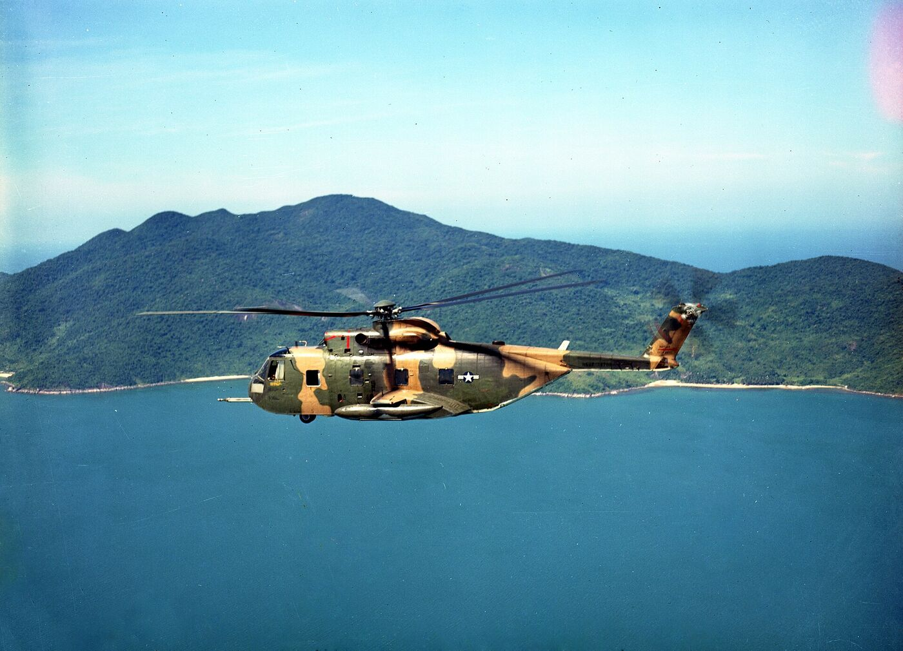
Rescue: Sikorsky HH-3E A.K.A. "Jolly Green Giant"
An armored rescue helicopter with a hoist, a refuelling probe and pararescuemen aboard. Refuelled in flight from HC-130 tankers, Jolly Greens reached downed aircrew deep in Laos and North Vietnam.
In the game: the only aircraft that can pick a survivor up. Unarmed, and very exposed on the ground. Send it in once the escorts are overhead.
29Keys
Radio words
Credits
Air Operations
Pedro Argento
Design and programming
Source
github.com/pedroargento/
air-ops-controller
Type
Special Elite, Anton, Roboto Condensed and Stardos Stencil, from Google Fonts.
Inspiration
The printed manuals of the late 1990s, Commandos: Behind Enemy Lines most of all.
Photographs
All photographs are U.S. Air Force and U.S. Army photographs in the public domain, from the U.S. National Archives and the National Museum of the U.S. Air Force, via Wikimedia Commons.
Cover: A-1H Skyraiders of the 22nd SOS escort an HH-3E, c. 1969. p.3: O-1E pilot with smoke grenade, NARA 50563439. p.4: SP4 Arnold Pellerin, 2/77th Artillery, photo SP6 Thomas L. Larsen. p.12, 22: O-1E 56-4200 near Saigon, 1967. p.12, 27: AH-1G, C Troop, 7/1st Cavalry, 1968, U.S. Army Heritage and Education Center. p.12, 26: UH-1B takes off, NARA 111-CCV-93-CC31459. p.8, 12: A-1E with napalm, c. 1965. p.13, 20: HH-3Es of Det. 1, 40th ARRS, Nakhon Phanom, 1969, 342-C-KE-36280. p.17, 25: F-100D of the 90th TFS, 1966. p.23: RF-101C 56-0176, 45th TRS. p.24: A-1E 52-135206, 1st SOS. p.28: OH-6A on reconnaissance patrol, photo SP4 King. p.29: HH-3E 67-14706, 37th ARRS, 1969, photo TSgt Elmer Mullins.
Hints & Tips
- Reports age. A contact seen ten minutes ago has moved. Work out where it might have gone.
- Units overclaim. Casualty claims from a fight run high. Trust the condition bar and the debrief, not the shouting.
- Fuel and bombs set the tempo. JOKER means plan a relief. BINGO means it is already too late to plan one.
- Find before you strike. A recon aircraft over the right valley is worth more than a bomb in the wrong one.
- Tell the troops. Forwarding costs nothing and saves platoons.
- Answer every request, even with no. A unit waiting for air that will never come is a unit standing still.
- Mind the gun you have not found. Where one aircraft took fire, the next one will too.
Customer Service
Found a bug, or a battle that went strangely? Please open an issue at github.com/pedroargento/air-ops-controller and include the Export log file from that battle. It replays the battle exactly, so we can see what you saw.